Fukaura
Fukaura · Aomori
Fukaura
Highlighted on the Aomori map.
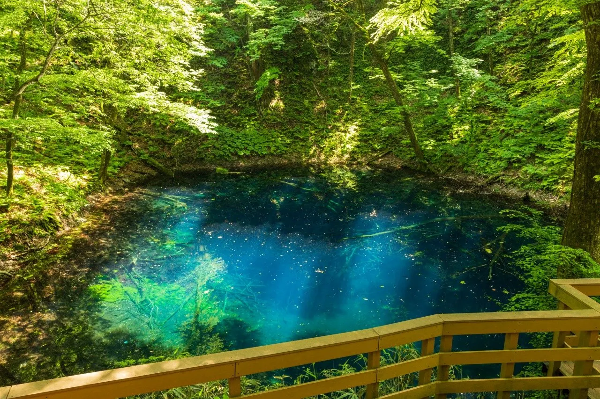
Stay
深浦観光ホテル
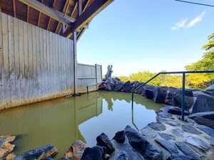
Fukaura Kankou Hoteru
黄金崎不老ふ死温泉
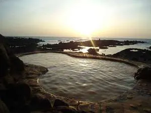
Koganezaki Furou Fu Shi Onsen
アオーネ白神十二湖
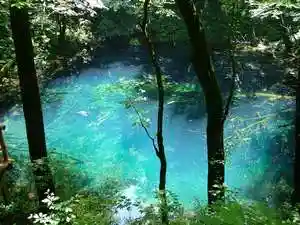
Aoone Shirakami Juuni Mizuumi
Dining
ふかうら本舗
Fukaura Honpo
海の駅ふかうら 深浦まるごと市場
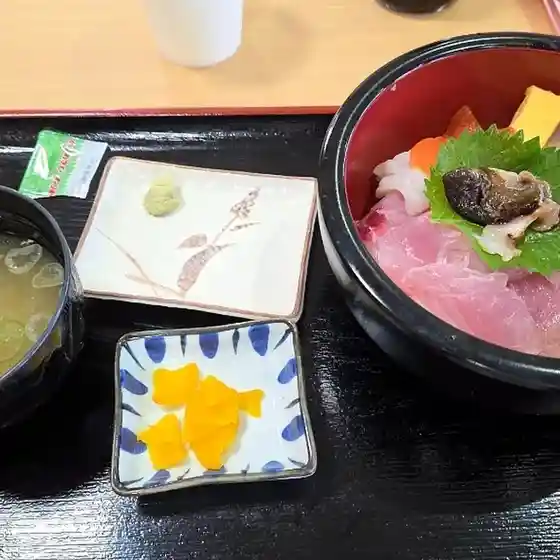
Umi No Eki Fukaura Fukaura Marugoto Shijou
レストラン アカショウビン
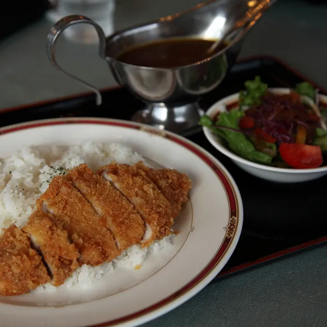
Resutoran Akashoubin
加藤食堂
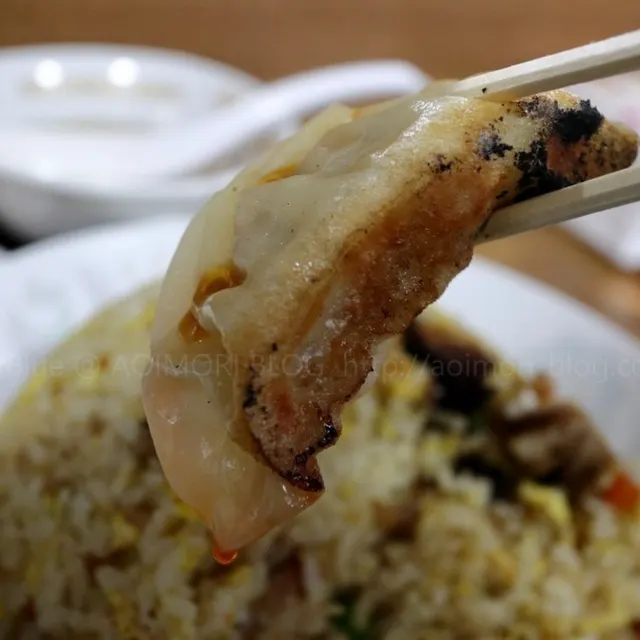
Katou Shokudou
物産展 コロボックル
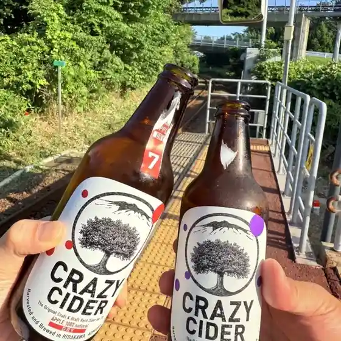
Bussan Ten Korobokkuru
静観荘
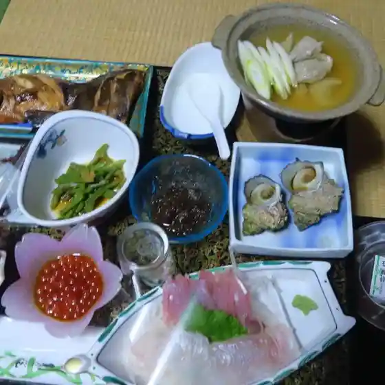
Seikan Sou
民宿 汐ヶ島
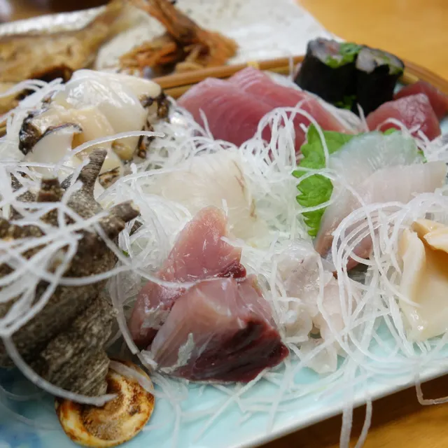
Minshuku Shio Ke Shima
十二湖庵
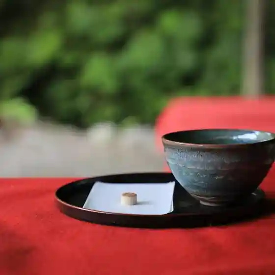
Juuni Mizuumi Iori
風合瀬海岸かおりの店
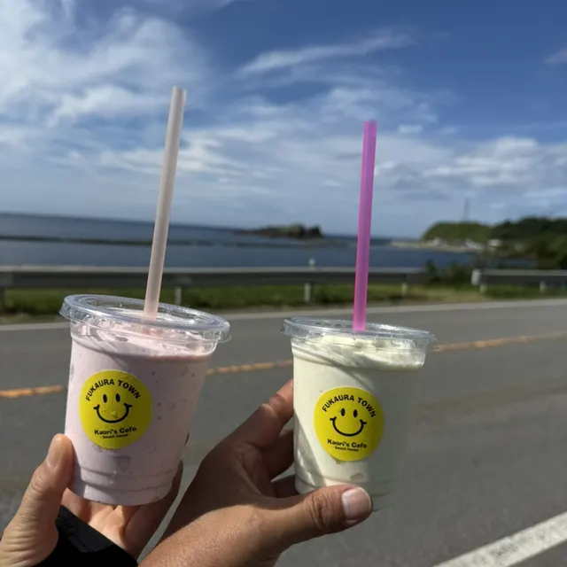
Fuuai Se Kaigan Kaorino Mise
味園
Aji Sono
静観荘網本
Seikan Sou Amimoto
千畳敷センター
Senjoujiki Sentaa
そばいろ茶屋
Sobairo Chaya
あづま食堂
Azuma Shokudou
不老ふ死温泉
Furou Fu Shi Onsen
美洋館
Bi Youkan
森のレストラン アオゲラ
Mori No Resutoran Aogera
漁師のおやつ屋さん 漁師カフェ 網小屋
Ryoushi Nooyatsu Ya San Ryoushi Kafe Ami Koya
キョロロ
Kyororo
かまど屋
Kamado Ya
王池
Ou Ike
不老ふ死温泉 売店
Furou Fu Shi Onsen Baiten
匠屋
Takumi Ya
道の駅ふかうら かそせいか焼き村
Michi No Eki Fukaura Kasoseika Yaki Mura
Sights
Lake Juniko (Twelve Lakes) / Aoike Pond
The Tsugaru Quasi-National Park, Lake Juniko (Twelve Lakes), is a collective name for 33 lakes and ponds that extend over an area of 4 square km (1.5 square miles) on an undulating plateau, with an altitude that ranges from 150 meters (492
Great Gingko of Kitakanegasawa
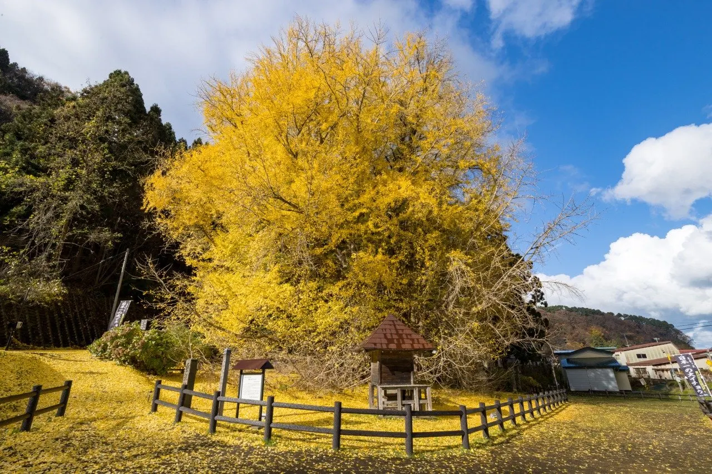
A gingko tree over 1,000 years old stands in the Kitakanegasawa district slightly inland from the coast in the northern part of Fukaura Town.
World Heritage Site, Shirakami Sanchi
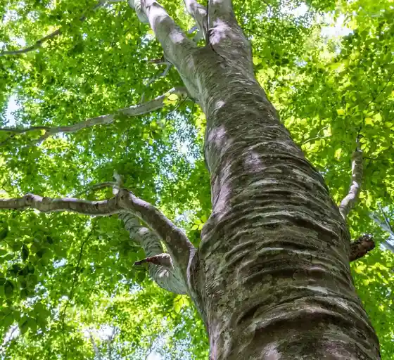
Shirakami Sanchi is a general term used to refer to the massive 130,000ha (501 square miles) mountainous land extended over Aomori and Akita prefecture.
Koganezaki Furofushi Onsen
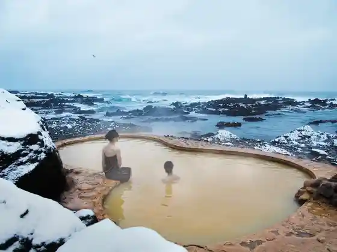
Soaking in this outdoor bath right on the seashore is a unique experience that you won't find anywhere else!
Senjojiki Coast
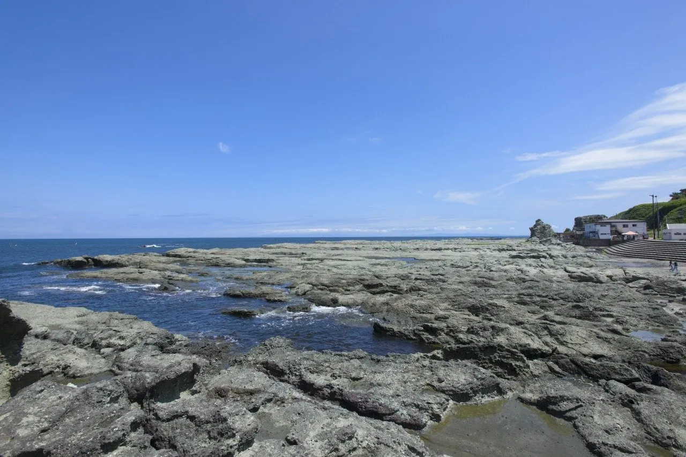
Senjojiki Coast, facing to the Sea of Japan, is a bedrock beach formed with the uplifting of land due to an earthquake in 1792.
Oiwa Rock
Seaside rock reached by a 100 m path and cave stairway, with 360-degree views over the Sea of Japan.
Roadside Station Fukaura Kasoseika Yakimura
Seaside market on Route 101 selling fish landed in Fukaura and local specialties.
Nihon Canyon
Juniko is the collective name for 33 lakes and ponds surrounded by beech forests in the western part of the Shirakami Sanchi region.
Todoroki Station (JR Gono Line)
Tiny wooden station standing alone above the Sea of Japan, famous for its sunset scenery.
Juniko Station Tourist Information Center
Entrance to Lake Juniko sightseeing